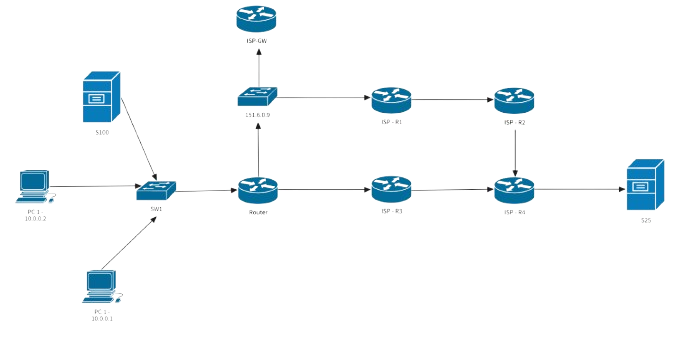
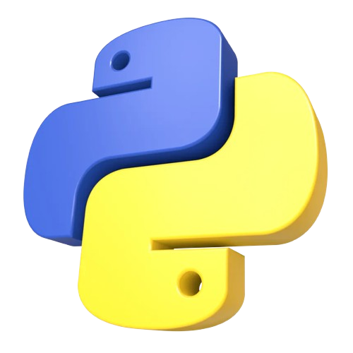

Bienvenue sur mon
portfolio
Salut, moi c'est Arthur ! Passionné en Réseaux et Télécommunications, je conçois, déploie et sécurise les infrastructures numériques. D'une configuration de routeur à l'administration d'un serveur Linux, j'aime résoudre des défis techniques concrets. Actuellement à la recherche de nouveaux projets pour mettre mes compétences en pratique.
Savoir-faire Technique
Infrastructures Réseaux
Les réseaux informatiques constituent le socle de la communication entre les systèmes et les utilisateurs. La conception, la configuration et la gestion des réseaux impliquent la mise en place d’architectures fiables, sécurisées et performantes, intégrant des protocoles adaptés aux besoins de l’entreprise. Une bonne maîtrise des réseaux permet d’assurer une connectivité optimale, une transmission efficace des données et une haute disponibilité des services.
Cybersécurité & Pentesting
La cybersécurité et le pentesting visent à protéger les systèmes d’information contre les menaces internes et externes. Le pentesting consiste à simuler des attaques afin d’identifier les vulnérabilités des réseaux, des systèmes et des applications avant qu’elles ne soient exploitées par des attaquants réels. Cette approche permet de renforcer la sécurité globale, d’appliquer des mesures correctives adaptées et de garantir la confidentialité, l’intégrité et la disponibilité des données.
Automatisation (Bash & Python)
L’automatisation avec Bash et Python permet d’optimiser l’administration des systèmes et des réseaux en réduisant les tâches répétitives et les risques d’erreurs humaines. Bash est utilisé pour l’automatisation rapide de commandes système, la gestion des services et la surveillance des ressources, tandis que Python offre une plus grande flexibilité pour développer des scripts avancés, interagir avec des API, analyser des données et automatiser des processus complexes. Ensemble, ces outils améliorent l’efficacité opérationnelle et la fiabilité des infrastructures informatiques.
Virtualisation
La virtualisation permet d’optimiser l’utilisation des ressources matérielles en faisant fonctionner plusieurs environnements virtuels sur une même infrastructure physique. Elle facilite le déploiement rapide de serveurs, améliore la flexibilité, la scalabilité et la continuité de service, tout en réduisant les coûts. Grâce à la virtualisation, les environnements de test, de développement et de production peuvent être isolés, sécurisés et gérés de manière centralisée.
Projets & Réalisations

Spotify Tools (PWA)
Conception et déploiement d'une Progressive Web App durant ma formation R&T. L'application exploite l'API Spotify pour offrir des outils d'analyse de données musicales, avec une interface optimisée et une gestion du cache pour un accès hors-ligne.

Administration & Architecture Réseau
Conception et déploiement d'une architecture réseau complète pour une petite structure. Mise en place de VLANs, routage inter-VLAN, et sécurisation des accès via des protocoles de redondance.

Jeu Python Automatisé
Création d'une application ludique intégrant des scripts d'automatisation. Focus sur la structure du code orienté objet et l'optimisation des performances de rendu.
Loisirs
Adrénaline
Sports extrêmes & Gym : Repousser ses limites physiques.
Exploration
Voyages & Mode : Curiosité culturelle et sens du détail.
Musique
Decouvrir mon univers sonore sur Spotify